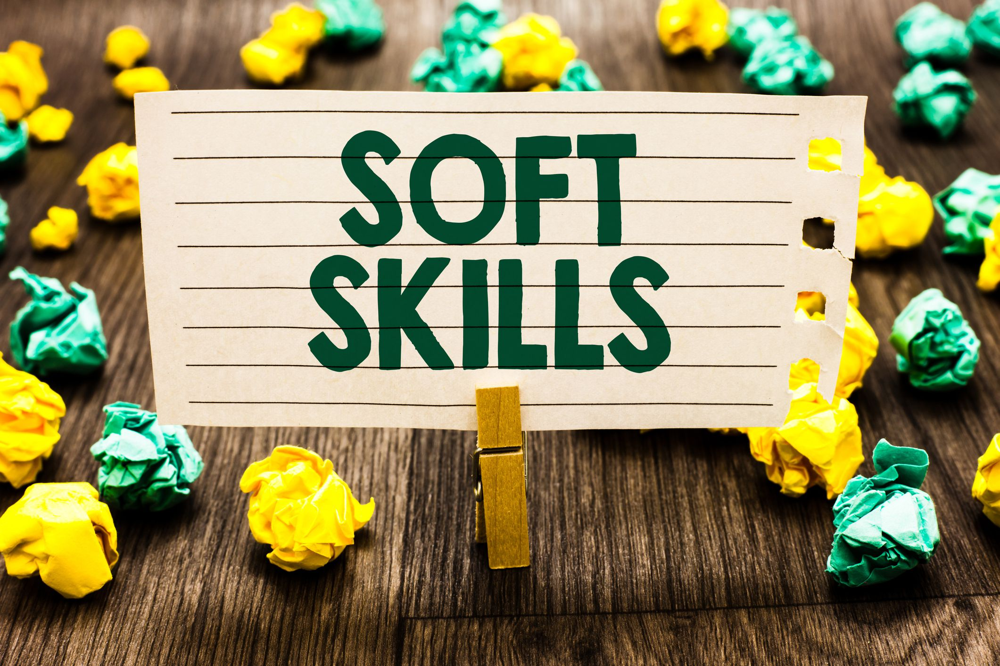

Soft Skills em Destaque

Habilidades Importantes
- Comunicação clara e escuta ativa: Saber se expressar de forma objetiva e escutar com atenção são pilares para uma boa convivência no ambiente de trabalho. A comunicação eficiente evita mal-entendidos e fortalece os relacionamentos interpessoais.
- Empatia nas interações pessoais: Colocar-se no lugar do outro ajuda a compreender diferentes pontos de vista e promove um ambiente mais respeitoso e colaborativo.
- Trabalho em equipe e colaboração: Trabalhar bem com outras pessoas, saber dividir tarefas e contribuir para o sucesso coletivo é essencial em qualquer área profissional.
- Flexibilidade e adaptação: Em um mundo em constante mudança, é fundamental saber se adaptar a novas situações, aprender rapidamente e lidar bem com imprevistos.
- Ética e responsabilidade: Agir com integridade, cumprir prazos e assumir os próprios erros demonstra profissionalismo e comprometimento.
- Autoconfiança: Acreditar em si mesmo, em suas habilidades e no próprio potencial ajuda a enfrentar desafios com mais segurança e determinação.
Aplicações no dia a dia
- Resolver problemas com criatividade: Encontrar soluções inovadoras, mesmo com recursos limitados, mostra iniciativa e capacidade de pensar fora da caixa.
- Gerenciar bem o tempo: Saber priorizar tarefas, cumprir prazos e evitar a procrastinação são habilidades que aumentam a produtividade.
- Analisar com pensamento crítico: Avaliar informações de forma lógica e objetiva ajuda na tomada de decisões mais assertivas.
- Ter atitude proativa: Antecipar problemas, sugerir melhorias e agir sem esperar ordens mostra engajamento e liderança.
- Liderar com empatia: Um bom líder ouve sua equipe, compreende suas dificuldades e motiva os colegas a alcançarem seus objetivos juntos.
- Negociar com equilíbrio: A habilidade de dialogar, ceder quando necessário e chegar a acordos justos é essencial em ambientes corporativos.
Mais exemplos práticos
- Escuta ativa e feedback construtivo: Saber ouvir com atenção e dar retornos que ajudem no crescimento pessoal e profissional fortalece relações e melhora o desempenho da equipe.
- Gestão emocional: Controlar emoções em situações de pressão ou conflito permite agir com mais racionalidade e equilíbrio.
- Motivação pessoal: Estar motivado mesmo diante de dificuldades contribui para manter o foco e a energia em alta.
- Busca por aprendizado contínuo: Ter curiosidade e vontade de aprender constantemente é um diferencial importante em um mercado de trabalho que está sempre evoluindo.